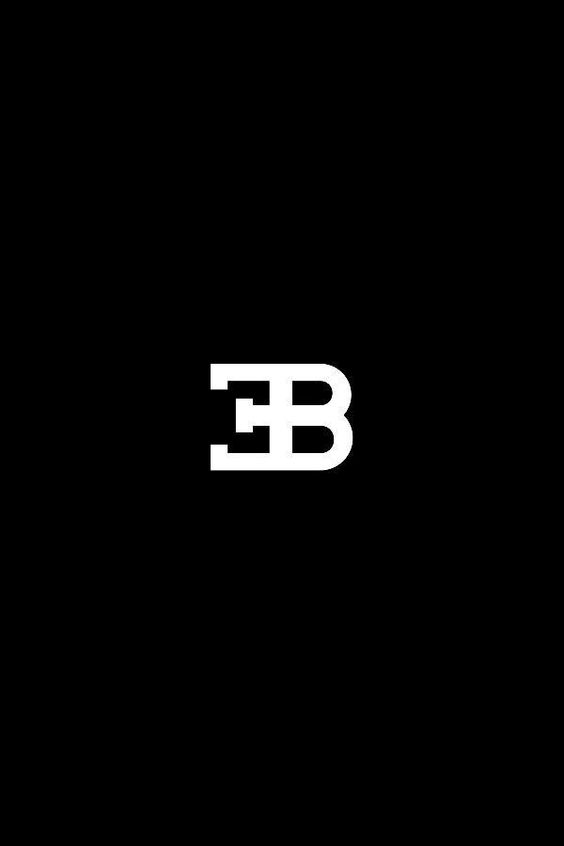
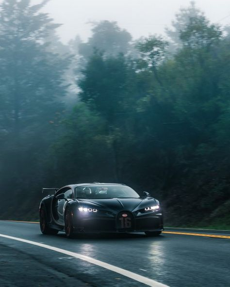
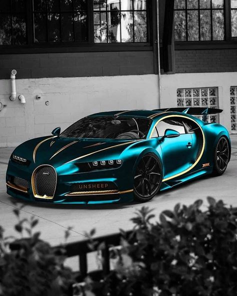
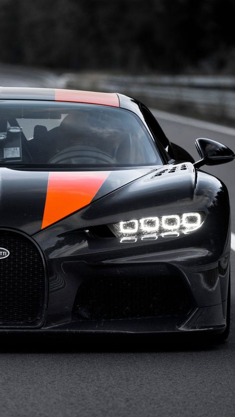
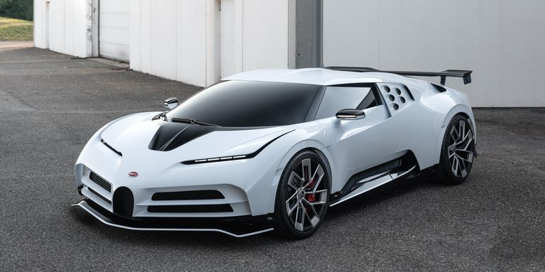

-
Nuestros coches
Mclaren Bugatti Maserati Bentley
- Seguros
- Sobre nosotros
- Contacto

Bugatti Chiron2.500.000€
   Consumo Aceleración Potencia Velocidad máxima 21.47 - 22,3 l/100km De 0 a 100km/h en 2,5s 1500 - 1600 CV 490,5 km/h
Información adicional:El Bugatti Chiron hace su debut en el Salón de Ginebra y, sin duda, es una de las mayores estrellas de la muestra. El sucesor del Bugatti Veyron cuenta con 1.500CV de potencia y un par motor máximo de 1.600 Nm constante desde 2.000 a 6.000 revoluciones por minuto.
Además, el fabricante anuncia unos altos niveles de eficacia, seguridad y comodidad. El Bugatti Chiron es más alto y ancho que su precedesor, lo que permite ofrecer más espacio, sobre todo para las piernas y una ergonomía interior mejorada. Además, el espacio libre para la cabeza se ha incrementado 12 milímetros. Su diseño exterior está inspirado en el legendario Bugatti Type 57SC Atlantic.

Bugatti Centodieci8.000.000€
Consumo Aceleración Potencia Velocidad máxima 28 l/100km De 0 a 100km/h en 2,6s 1.600 CV 380 km/h
Información adicional:Bugatti rinde homenaje al EB 110 de 1991 con el Bugatti Centodieci. Un modelo del que tan solo fabricarán 10 unidades a 8 millones de euros (más impuestos) la unidad. Toma por base el actual Bugatti Chiron, con un W16 de 1600 CV y un 0 a 100 km/h en 2,6 segundos.
El Bugatti EB 110 de 1991 es probablemente uno de los superdeportivos más olvidados de los años 90. Esa bestia tecnológica equipaba un V12 sobrealimentado por cuatro turbos y un chasis en fibra de carbono, cuando esa tecnología era casi ciencia ficción.
Bugatti Divo5.400.000€
Consumo Aceleración Potencia Velocidad máxima 15,2 l/100km De 0 a 100km/h en 2,4s 1.400 CV 380 km/h
Información adicional:El nombre Divo hace homenaje a un piloto de origen francés, que fue dos veces ganador de la mítica Targa Fiorio. Esta prueba era, hasta 1977, una carrera de resistencia que se celebraba en carretera abierta. La Targa Fiorio tenía lugar en las montañas de Sicilia, cerca de Palermo, la capital de esta isla del Mediterráneo.
Albert Divo nació en París el 24 de enero de 1895, bajo el nombre de Albert Eugène Diwo. Posteriormente, se llamó a sí mismo Divo. Después de servir como piloto de combate en la Primera Guerra Mundial, ejerció como mecánico de coches. Su carrera profesional como piloto de carreras comenzó con Sunbeam y Talbot-Darracq allá por 1919.